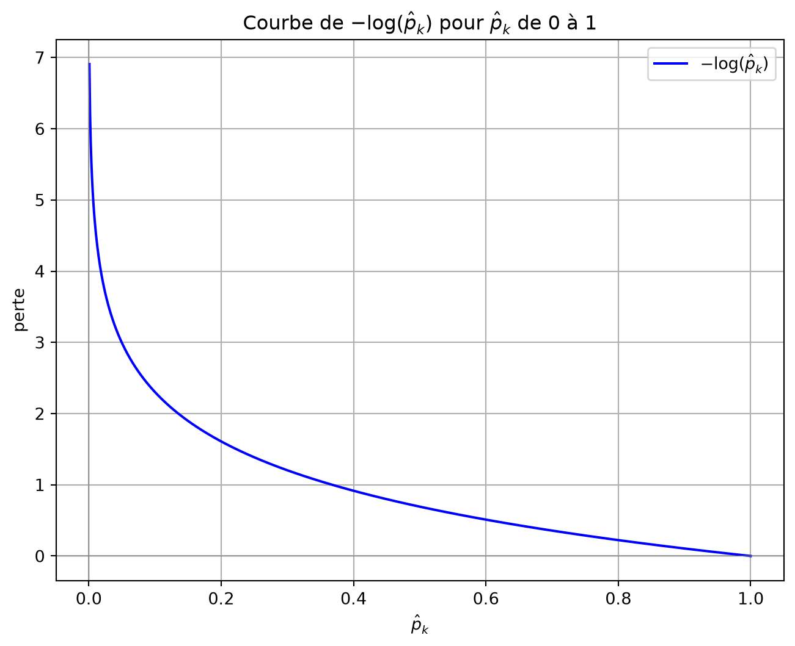

import numpy as np
def sigmoid(z):
return 1.0 / (1.0 + np.exp(-z))
def sigmoid_prime(z):
a = sigmoid(z)
return a * (1.0 - a)
def bce_loss(y_true, y_prob, eps=1e-9):
"""Entropie croisée binaire moyennée sur les exemples."""
p = np.clip(y_prob, eps, 1 - eps)
return -np.mean(y_true * np.log(p) + (1 - y_true) * np.log(1 - p))
def xavier_init(rng, fan_in, fan_out):
std = np.sqrt(2.0 / (fan_in + fan_out))
return rng.normal(0.0, std, size=(fan_in, fan_out))
def relu(z):
return np.maximum(0.0, z)
def relu_prime(z):
return (z > 0).astype(float)
def he_init(rng, fan_in, fan_out):
std = np.sqrt(2.0 / fan_in)
return rng.normal(0.0, std, size=(fan_in, fan_out))
class SimpleMLP:
"""MLP binaire avec choix d'activation cachée, L2, dropout et décroissance du taux."""
def __init__(self, layer_sizes, lr=0.1, seed=None, l2=0.0,
hidden_activation="relu", lr_decay=None, dropout_rate=0.0):
self.sizes = list(layer_sizes)
self.lr = float(lr)
self.base_lr = float(lr)
self.l2 = float(l2)
self.hidden_activation = hidden_activation
self.lr_decay = lr_decay
self.dropout_rate = float(dropout_rate)
self.rng = np.random.default_rng(seed)
self.W = []
L = len(self.sizes) - 1
for l, (din, dout) in enumerate(zip(self.sizes[:-1], self.sizes[1:]), start=1):
if l < L and self.hidden_activation == "relu":
Wk = he_init(self.rng, din, dout)
else:
Wk = xavier_init(self.rng, din, dout)
self.W.append(Wk)
self.b = [np.zeros(dout) for dout in self.sizes[1:]]
def _act(self, z, last=False):
if last:
return sigmoid(z)
return relu(z) if self.hidden_activation == "relu" else sigmoid(z)
def _act_prime(self, z, last=False):
if last:
return sigmoid_prime(z)
return relu_prime(z) if self.hidden_activation == "relu" else sigmoid_prime(z)
def forward(self, X):
a = X
L = len(self.W)
for l, (W, b) in enumerate(zip(self.W, self.b), start=1):
a = self._act(a @ W + b, last=(l == L))
return a.ravel()
def predict_proba(self, X):
return self.forward(X)
def predict(self, X, threshold=0.5):
return (self.predict_proba(X) >= threshold).astype(int)
def loss(self, X, y):
"""Rapporter la BCE moyenne et L2, sans dropout."""
p = self.predict_proba(X)
base = bce_loss(y, p)
if self.l2 > 0:
base += 0.5 * self.l2 * sum((W ** 2).sum() for W in self.W)
return base
def _forward_full(self, X):
a = X
activations = [a]
zs = []
dropout_masks = []
L = len(self.W)
for l, (W, b) in enumerate(zip(self.W, self.b), start=1):
z = a @ W + b
a = self._act(z, last=(l == L))
# Masque identité pour la sortie et lorsque le dropout est désactivé.
mask = np.ones_like(a)
if l < L and self.dropout_rate > 0:
keep_prob = 1.0 - self.dropout_rate
mask = (self.rng.random(a.shape) >= self.dropout_rate) / keep_prob
a = a * mask
zs.append(z)
activations.append(a)
dropout_masks.append(mask)
return activations, zs, dropout_masks
def train(self, X, y, epochs=30, batch_size=None, verbose=True, shuffle=True):
"""X : (N, d), y : (N,); batch_size=None utilise toutes les données."""
N = X.shape[0]
idx = np.arange(N)
B = N if batch_size is None else int(batch_size)
for ep in range(1, epochs + 1):
if shuffle:
self.rng.shuffle(idx)
if self.lr_decay is not None:
self.lr = self.base_lr * self.lr_decay ** (ep - 1)
base_loss = self.loss(X, y)
for start in range(0, N, B):
sl = idx[start:start + B]
Xb = X[sl]
yb = y[sl].reshape(-1, 1)
Bsz = Xb.shape[0]
activations, zs, dropout_masks = self._forward_full(Xb)
A_L = activations[-1]
# Chaque ligne est la sensibilité aux préactivations pour un exemple.
delta = A_L - yb
grads_W = [None] * len(self.W)
grads_b = [None] * len(self.b)
# Moyenner une seule fois les gradients des paramètres sur les exemples.
grads_W[-1] = activations[-2].T @ delta / Bsz
grads_b[-1] = delta.mean(axis=0)
for k in range(len(self.W) - 2, -1, -1):
z = zs[k]
d_act = self._act_prime(z, last=False)
delta = delta @ self.W[k + 1].T
delta = delta * dropout_masks[k]
delta = delta * d_act
grads_W[k] = activations[k].T @ delta / Bsz
grads_b[k] = delta.mean(axis=0)
if self.l2 > 0:
for k in range(len(self.W)):
grads_W[k] += self.l2 * self.W[k]
# Tous les gradients utilisent les poids du même passage avant.
for k in range(len(self.W)):
self.W[k] -= self.lr * grads_W[k]
self.b[k] -= self.lr * grads_b[k]
new_loss = self.loss(X, y)
if verbose:
print(f"Époque {ep:3d} | perte {base_loss:.5f} -> {new_loss:.5f} | taux={self.lr:.4f}")


Comment pénaliser les erreurs faites avec confiance?
Afficher le code
